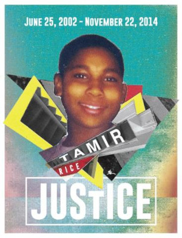

What Civil Rights Look Like Today
Home
Timeline
The Little Rock Nine
Civil Rights Today
Mailing List
There are still many steps we need to take towards equality. The equality issues we face today are direct results of segregation and slavery. Some examples of this are differences in mortality for black patients vs. white patients in healthcare, lack of good education in gentrified areas, wage gaps between black and white families, poverty, and mass incarceration.
At the root of many of these issues lies implicit, or unconcious bias. This simply means that while a person may directly believe that all races are equal, there are sterotypes and attitudes that affect our perceptions of individuals without our knowledege. Implicit bias applies to everyone, even individuals who must be impartial such as judges and medical professionals. Our brains naturally hold implicit biases that favor our own groups. Our implicit biases may be in direct conflict with our beliefs.
This implicit bias heavily impacts inequality in the medical profession. Just like the general population, there are few medical professionals who would admit to treating a person differently because of their race. If this bias is unconcious, it still effects the mortality of the black community. How have we been able to measure a person's implicit bias? Harvard University has developed a test called the Implicit Association Test which requires rapidly associating Black and White faces with positive or negative terms.
In many cases, it was revealed that the professionals who took the test had an unconcious bias towards people of color, even if they believed that they held no bias. In all reality, this unconcious bias is in many people in this country, not just medical professionals.
Want more information? Fill out our mailing list on the next page.
